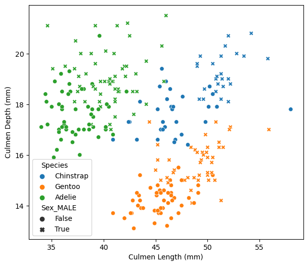
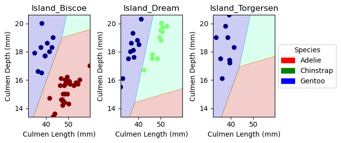

Predicting penguin species from the Palmer Archipelago.
Author
Andre Xiao
Published
February 21, 2024
Image source: @allisonhorst
1 Abstract
This data set contains physiological measurements and species labels for several populations of Adelie, Chinstrap, and Gentoo penguins in the Palmer Archipelago, Antarctica. This study attempts to find three features (two quantitative and one qualitative) that will be able to predict the penguins’ species with 100% testing accuracy. To do this, I experiment with scikit-learn's logistic regression, support vector machine, random forest classifier, and decision tree classifier models. In the end, the logistic regression model was able to predict the penguins’ species with 100% testing accuracy.
The Palmer Penguins data was originally collected by @gormanEcologicalSexualDimorphism2014 and was nicely packaged and released for use in the data science community by @horstAllisonhorstPalmerpenguinsV02020.
2 Importing Data
First, let’s import the data from here, simplify the penguins’ species name, and look at the first five rows of data.
import pandas as pdtrain_url ="https://raw.githubusercontent.com/PhilChodrow/ml-notes/main/data/palmer-penguins/train.csv"train = pd.read_csv(train_url)train['Species'] = train['Species'].str.split().str.get(0)train.head()
studyName
Sample Number
Species
Region
Island
Stage
Individual ID
Clutch Completion
Date Egg
Culmen Length (mm)
Culmen Depth (mm)
Flipper Length (mm)
Body Mass (g)
Sex
Delta 15 N (o/oo)
Delta 13 C (o/oo)
Comments
0
PAL0809
31
Chinstrap
Anvers
Dream
Adult, 1 Egg Stage
N63A1
Yes
11/24/08
40.9
16.6
187.0
3200.0
FEMALE
9.08458
-24.54903
NaN
1
PAL0809
41
Chinstrap
Anvers
Dream
Adult, 1 Egg Stage
N74A1
Yes
11/24/08
49.0
19.5
210.0
3950.0
MALE
9.53262
-24.66867
NaN
2
PAL0708
4
Gentoo
Anvers
Biscoe
Adult, 1 Egg Stage
N32A2
Yes
11/27/07
50.0
15.2
218.0
5700.0
MALE
8.25540
-25.40075
NaN
3
PAL0708
15
Gentoo
Anvers
Biscoe
Adult, 1 Egg Stage
N38A1
Yes
12/3/07
45.8
14.6
210.0
4200.0
FEMALE
7.79958
-25.62618
NaN
4
PAL0809
34
Chinstrap
Anvers
Dream
Adult, 1 Egg Stage
N65A2
Yes
11/24/08
51.0
18.8
203.0
4100.0
MALE
9.23196
-24.17282
NaN
After importing the data, we need to clean our data and prepare our qualitative data. The below function uses one-hot encoding to turn the qualitative data into 0 and 1 columns. In this case, the values will be True and False. Additionally, the function also splits away our \(y\) variable which is stored in the variable y_train.
Let’s visualize some potential features using two scatterplots and a summary table. In the two graphs below, I build up on these notes. In these notes, we discovered that Culmen Length (mm) and Culmen Depth (mm) are strong features to use to classify species type. In this study, I will be adding a qualitative data to help improve the test accuracy of the model.
3.1 Figures
The figure on the left uses the Island column as the qualitative feature and the figure on the right uses the Sex column as the qualitative feature.
(a) Species by Culmen Length, Culmen Depth, and Island.

(b) Species by Culmen Length, Culmen Depth, and Sex.
Figure 1: Compares Species by culmen length, culmen depth, island and sex.
We can see that both figures have three distinct clusters of points. This is thanks to using Culmen Length (mm) and Culmen Depth (mm) as features. However, there are a few points that overlap regions. In the left figure, we can see that all Chinstrap and Gentoo penguins reside on Dream Island and Biscoe Island, respectively Meanwhile, Adelie penguins live on three islands, however, Adelie penguins that are near the general Chinstrap (blue) region of the figure reside on Torgersen Island.
In the right figure, we can see most Adelie and Gentoo penguins that are located near the Chinstrap (blue) region of the figure are male.
3.2 Summary Table
Let’s take a closer look at the Island feature. The table below describes the number of each species on each island.
Code
(train.groupby(by=['Species', 'Island']).aggregate({'Species':'count'}) / train.groupby(by=['Species']).aggregate({'Species':'count'})).rename(columns={'Species':'Distribution of Species'})
Table 1: Distribution of Species by Island.
Distribution of Species
Species
Island
Adelie
Biscoe
0.275
Dream
0.375
Torgersen
0.350
Chinstrap
Dream
1.000
Gentoo
Biscoe
1.000
We can see that Adelie penguins are spread out among all three islands, whereas, Chinstrap and Gentoo penguins reside only on Dream and Biscoe Island respectively. We can then most likely use Culmen Length (mm) and Culmen Depth (mm) to seperate the Adelie penguins from Gentoos and Chinstraps on Dream and Biscoe Island.
4 Finding the Best Features
We will try to find the best features for multiple models: logisitc regression, random forest classifer, decision tree classifier, and support vector machine.
The function below uses cross-validation to determine the three best features (two qualitative and one qualitative) and the respective score for a given model. We will be using five folds for cross-validation.
from itertools import combinationsall_qual_cols =list({col.split('_')[0] for col in X_train.select_dtypes(exclude=['number']).columns})all_quant_cols = X_train.select_dtypes(exclude=["bool_","object_"]).columnsfrom sklearn.linear_model import LogisticRegressionfrom sklearn.model_selection import cross_val_scoreimport warnings# uses cross-validation to find the best scores for each combination of two quantitative columns and one qualitative column# returns ([best columns], best score)def cross_val(model, cv, best_score):with warnings.catch_warnings(): warnings.simplefilter("ignore")for qual in all_qual_cols: qual_cols = [col for col in X_train.columns if qual in col]for pair in combinations(all_quant_cols, 2): cols =list(pair) + qual_cols cv_scores = cross_val_score(model, X_train[cols], y_train, cv = cv) col_scores = (cols, cv_scores.mean())if col_scores[1] > best_score[1]: best_score = col_scoresreturn best_score
1
Get pre-one-hot encoded column names for qual data
2
Get quant data.
3
Uses cross-validation to find the best scores for each combination of two quantitative columns and one qualitative column. Returns ([best columns], best score).
The function below creates a plot of decision regions for a given model.
For logistic regression, we can see that the best features are Culmen Length (mm), Culmen Depth (mm), and Island with a mean cross-validation score of about 99.6% accuracy.
For the random forest classifier, we can see that the best features are Culmen Length (mm), Culmen Depth (mm), and Sex with a mean cross-validation score of about 98.8% accuracy.
4.3 Decision Tree Classifier
For the decision tree classifier, we must also find the optimal max depth. We test integer values from 5 to 50 and choose the best value.
from sklearn.tree import DecisionTreeClassifierimport numpy as npdepth = np.arange(5, 50)best_score_DTC = ([], 0)best_d =10for d in depth: DTC = DecisionTreeClassifier(max_depth = d)#print(d) cross_val_DTC = cross_val(DTC, 5, best_score_DTC)#print(cross_val_DTC, best_score_DTC)if cross_val_DTC[1] > best_score_DTC[1]: best_score_DTC = cross_val_DTC best_d = dprint(best_score_DTC, best_d)
For the decision tree classifier, we can see that the best features are Culmen Length (mm), Culmen Depth (mm), and Sex with a mean cross-validation score of about 97.6% accuracy using max_depth = 6.
4.4 Support Vector Machine
For the support vector machine, we must find the best gamma value. We test values from ranging from \(10^{-5}\) to \(10^5\).
For the support vector machine, we can see that the best features are Culmen Length (mm), Culmen Depth (mm), and Sex with a mean cross-validation score of about 98% accuracy using gamma = 0.1.
Figure 2: Decision regions for logistic regression, RFC, DTC, and SVM.
From these plots, we can see that the RFC, DTC, and SVM models are potentially overfitting on the training data. As a result, we will use the logistic regression model for the testing data.
7 Testing
With our models trained, we can now test the logistic regression model on the test data pulled from here.
Logistic regression has a test score of 100% so we have accomplished our objective!
7.2 Decision Regions
Now, let’s look at the decision regions of the logistic regression model for the test data.
Code
plot_regions(LR, X_test[cols_LR], y_test)

Figure 3: Decision regions of the logistic regression model for the test data.
8 Discussion
This study experiemented with scikit-learn's logistic regression, random forest classifier, decision tree classifier, and support vector machine models to predict penguin species from the Palmer Penguins data set with 100% testing accuracy. After training the four models, the random forest and decision tree classifiers had a training accuracy of 100%, while the logistic regression and support vector machine models had a training accuracy of 99.6% an 99.2% respectively. However, when looking at the decision regions in Figure 2, we can see that the random forest and decision tree classifers and the support vector machine were potentially overfitting on the training data. As a result, I used the logistic regression model for the testing data and it successfully predicted the penguins’ species with 100% testing accuracy.